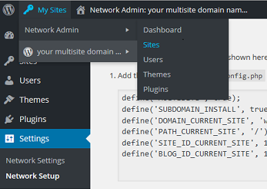

Install WordPress Multisite in Apache on a LAMP stack for Ubuntu
Set up WordPress Multisite in Apache - Ubuntu
Difficulty: 2
Time: 20 minutes
You can manage multiple sites under one WordPress installation. This setup is a great convenience if you manage many sites completely independent of each other (or sites that are related, such as subdomains), as you’d otherwise have to log into different WordPress accounts.
For this article, we'll walk through setting up WordPress multisite for a primary domain and its subdomains.
We'll set up a fresh installation of WordPress in Apache on an Ubuntu system. The steps are for a non-root user with sudo privileges.
We'll use these example sites:
| Site 1 |
coolexample.com (primary) |
| Site 2 |
coolexampleproduct.com
product.coolexample.com |
| Site 3 |
coolexamplecompany.com
aboutus.coolexample.com |
Prerequisites
Create a MySQL database and administrator for WordPress
Set up your MySQL database with an administrator so that WordPress has a place to store all your site and user information.
Remember: All MySQL code statements must end with a semi-colon (;).
- Log into your MySQL admin account.
mysql -u root -p
- At the prompt, enter your MySQL root password.
- At the MySQL prompt, create your WordPress database. We’ll use the database name as “wordpress.”
CREATE DATABASE wordpress;
- Create the database administrator account, and set the user’s credentials. We’ll use “wordpressadmin” as the example user name, and “wordpresspassword” as the password.
CREATE USER wordpressadmin@localhost IDENTIFIED BY 'wordpresspassword';
As a good security practice, create a strong password. Keep your user name and password handy, as you’ll need them later.
- Give, or grant, your admin permissions to the database.
GRANT ALL PRIVILEGES ON wordpress.* TO wordpressadmin@localhost;
GRANT is one of the account management statements that the MySQL server notices and loads into memory right away. So a manual reload/restart should not be necessary. However, you can check the permissions using SHOW GRANTS.
SHOW GRANTS FOR 'wordpressadmin'@'localhost';
- If the privileges didn’t take, flush the privileges to activate the user.
FLUSH forces a reload of the cache.
FLUSH PRIVILEGES;
You're finished with the MySQL part!
- Exit MySQL to bring you back to your normal command prompt.
exit
Download WordPress
Your system is now ready for installing WordPress into your directory. WordPress is available in a tar.gz or zip format. We'll get the tar.gz file.
- Download the WordPress files from the official site using
wget.
cd ~
wget http://wordpress.org/latest.tar.gz
This URL always links to a compressed file of the latest stable version of WordPress.
- Extract, or untar, the application directory.
tar xzvf latest.tar.gz
This command creates a directory wordpress in your home directory.
Copy files to document root
After you’ve configured WordPress, transfer the files to Apache’s root directory so that the application can serve content to your site visitors.
- Transfer your WordPress files to the website's root directory.
sudo cp -r ~/wordpress/* /var/www/html
This safely copies all of the contents from the directory you unpacked to the document root.
- Set directory permissions so that you can work with WordPress content (for example, uploading images).
Make the group ownership recursive to make sure that it will write to your subdirectories.
sudo chown www-data:www-data /var/www/html * -R
sudo chmod u+x /var/www/html * -R
- Restart Apache.
sudo service apache2 restart
Modify the WordPress configuration files
Modify your wp-config file to enable multisites
- Navigate to your WordPress document root.
cd /var/www/html
- Edit the following lines with the values in
wp-config.php.
sudo cp wp-config-sample.php wp-config.php
- Open the config file in your text editor.
sudo vim wp-config.php
- Look for this section of the code below (starting with
MySQL settings…), and enter your values of the three DB_ variables (database name, database username, mysql root password) using the credentials you just created.
// ** MySQL settings - You can get this info from your web host ** //
/** The name of the database for WordPress */
define('DB_NAME', 'wordpress');
/** MySQL database username */
define('DB_USER', 'wordpressadmin');
/** MySQL database password */
define('DB_PASSWORD', 'wordpresspassword');
- Farther down in the file, find the line
/* That's all, stop editing! Happy blogging. */ and add these lines right above it:
/* Multisite settings */
define( 'WP_ALLOW_MULTISITE', true );
- Save and close the file.
Enable mod rewrite
- Activate the Apache Mod_Rewrite module.
sudo a2enmod rewrite
Your output message might look like this:
Enabling module rewrite.
To activate the new configuration, you need to run:
service apache2 restart
- Restart Apache.
sudo service apache2 restart
Install WordPress
Now you can access the WordPress web interface.
- In your web browser, enter your primary domain name. In our example, that's
http://coolexample.com. Remember to use your domain name to access WordPress install, not your IP. Otherwise, you'll get stuck at creating a multisite.
(If the Apache default page displays, append
/wp-admin/ to your URL.)
- If you get an introductory page, click Let's go! to continue.
Your next screen is the main WordPress 5-minute install screen and looks something like this:

- Choose a user name and password. Use the password supplied if you like; just be sure to save it somewhere handy.
- Click Install WordPress. The installation might take a few minutes.
You'll get a "Success!" screen with your login credentials. Click Log In to continue.
Your next screen prompts you to log in again.
- Log in with your newly created username and password.
Enable multisite
Update your wp-config file
- In your WordPress admin dashboard, click Tools on the left-hand panel, then Network Setup.
- Because we're working with subdomains, choose sub-domains, and change your Network Title if you like. Click Install.
- In the next Network Setup screen, copy the
wp-config code in the first section. We'll paste this into our configuration file.

The code resembles this:
define('MULTISITE', true);
define('SUBDOMAIN_INSTALL', true);
define('DOMAIN_CURRENT_SITE', 'coolexample.com');
define('PATH_CURRENT_SITE', '/');
define('SITE_ID_CURRENT_SITE', 1);
define('BLOG_ID_CURRENT_SITE', 1);
- Go back to your command line and open your wp-config.php file for editing.
sudo vim /var/www/html/wp-config.php
- Paste in the code you just copied right above
/* That's all, stop editing! Happy blogging. */.
- After you paste the code, save and close the file.
Modify your .htaccess file
- Back in the WordPress Network Setup screen, copy the
.htaccess code in the second section.
- In your terminal, pull up your
.htaccess file.
sudo vim /var/www/html/.htaccess
- Replace all the existing code (delete it manually) with the entire block of
.htaccess code from WordPress.
The code resembles this:
RewriteEngine On
RewriteEngine On
RewriteBase /
RewriteRule ^index\.php$ - [L]
# add a trailing slash to /wp-admin
RewriteRule ^([_0-9a-zA-Z-]+/)?wp-admin$ $1wp-admin/ [R=301,L]
RewriteCond %{REQUEST_FILENAME} -f [OR]
RewriteCond %{REQUEST_FILENAME} -d
RewriteRule ^ - [L]
RewriteRule ^([_0-9a-zA-Z-]+/)?(wp-(content|admin|includes).*) $2 [L]
RewriteRule ^([_0-9a-zA-Z-]+/)?(.*\.php)$ $2 [L]
RewriteRule . index.php [L]
- Save and close the file.
Enable use of .htaccess
AllowOverride All allows all options in your .htaccess file. We're going to make sure this is set to All. Otherwise the 000-default.conf file assumes that you have only one site on your server.
- Open your
apache2.conf file.
sudo vim /etc/apache2/apache2.conf
- Look for this line, and make sure it's uncommented:
AccessFileName .htaccess
- Find the
Directory /var/www/ section. It looks like this:
<Directory /var/www/>
Options Indexes FollowSymLinks
AllowOverride None
Require all granted
</Directory>AllowOverride line, change None to All.
AllowOverride All
- Save and close the file.
Make Apache load index.php pages
If your WordPress installation is on a fresh LAMP server, you likely still see your Apache test page instead of your WordPress page. To fix this, edit your DirectoryIndex so that Apache will load index.php, instead of index.html, by default.
- Back at your terminal, go to your
/mods-enabled/ directory.
cd /etc/apache2/mods-enabled/
sudo vim dir.conf
- Find the
DirectoryIndex line; it's followed by a line of index files. Add index.php as the first item in that list, right after DirectoryIndex. This way, Apache will look for and load and index.php files before other extensions.
- Save and close the file.
- Restart Apache.
sudo service apache2 restart
Now you should see your WordPress serve up content.
Create additional sites or subdomains
- Back in your browser, click Log In at the bottom of the page or simply reload the page.
- Go to My Sites in your top navigation bar. Mouse over it, and from the drop-down menu, select Network Admin, then Sites.

At the top menu bar, "Network Admin" should now appear before your site name.
So the option looks like Network Admin: your domain name.
- On the main screen, next to Sites, click Add New.
- Fill out your first subdomain information.
At the Site Address field, fill in your first subdomain. For example, for product.coolexample.com, you'll simply put product.
- Click Add Site to finish. This might take a few minutes.
- Repeat for all your subdomains.
Next Steps
Congratulations! You have successfully set up a WordPress multisite. You'll be able to manage all your sites from your WordPress panel. There's much you can do from here. One option is to map your subdomains to external domains. See Set Up WordPress Domain Mapping in Apache - Debian, Ubuntu for instructions.